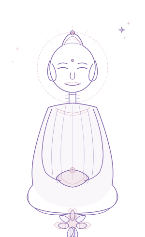

Click any token / class name to copy it. Toggle direction to inspect components in RTL & LTR.
The unified design reference for the Einat Shomonov public website. Everything renders live from the tokens in this
file’s :root — the single source of truth to mirror into src/styles/_variables.scss.
This version resolves the cohesion issues found in review: one cool palette, a single pill-shaped button system,
one card family, and a consistent shape rule. See What changed & why.
Color
One cool spa family. Purple carries all actions & emphasis; blush is decorative
only (never a button); an optional champagne hairline replaces the retired olive gold. Click a swatch to copy its token.
Brand
Accents
Surfaces
Text & Borders
Semantic
Brand gradients & alpha helpers
Formerly hardcoded across component SCSS — now single reusable tokens.
Typography
Font: 'Heebo', sans-serif — a Hebrew-optimised Google Font. Base line-height 1.6; headings 1.3.
Headings (h1–h4)
כותרת ראשית · Heading 1
כותרת · Heading 2
כותרת · Heading 3
כותרת · Heading 4
Spacing
A rem-based scale. --spacing-3xl is the default section vertical padding.
Shape · Radius & Shadow
One memorable rule so shape feels intentional everywhere.
Purple-tinted shadows sit better on the lavender surfaces than neutral black.
Layout
Container max-width 1200px, centered with
margin-inline: auto. Fixed header height 88px.
The site is RTL — components use logical properties (inset-inline-start, margin-inline).
Breakpoints _mixins.scss
Name
min-width
sm
640px
md
768px
lg
1024px
xl
1280px
2xl
1536px
Buttons
One pill-shaped .btn. Variants express hierarchy (not arbitrary color):
--primary (filled),
--secondary (outline),
--ghost (text). Sizes:
--sm / default / --lg.
Visible :focus-visible ring for accessibility. Every variant keeps a
44px minimum tap target new —
so even .btn--sm stays finger-friendly on mobile. Add aria-busy="true" with a
.btn__spinner to show work in progress new.
Hierarchy
Sizes · hero & form CTAs both become .btn--primary.btn--lg
Busy state · aria-busy="true" + .btn__spinner (fix: feedback while sending)
Cards
One foundation .card (shared surface, 16px radius, 1px border, unified shadow &
lift-on-hover) with two variants:
.card--media (content) and
.card--feature (centered gradient feature). Hover to see the shared lift.
The design system has two tiers. Foundational components (buttons, cards, fields) are calm and
utilitarian. Expressive components are the site’s personality — hand-drawn, animated, editorial — and the
rule that keeps them on-brand is simple: they draw every value from the same token palette (purple, blush,
champagne) plus a small set of expressive tokens. Creative, never off-system.
The pattern — an alternating editorial “paper note”
Used on the treatments page (.treatment-section). A ruled-paper card with a sketchy asymmetric
border, an offset purple “sticker” shadow, a champagne washi-tape, floating doodles, and an illustration that
swaps sides every other row. Hover the note; the wobble flips. Animations respect prefers-reduced-motion.

עיסוי מרפא
מפגש מרגיע לשחרור מתחים בגוף ובנפש, בשילוב נשימה מודעת ומגע רך המחזיר את הגוף לאיזון.
The shared decorative flourish, also usable under any section title or as the hero ornament.
How to keep the expressive tier coherent
Do: reuse these tokens for any future playful component (a testimonial pinned like a photo, a “notebook” blog intro, doodle section dividers). Same palette + sketch/tape/doodle vocabulary = it feels like one hand made it.
Don’t: introduce new raw hexes or one-off radii. If a new expressive trait is needed, add a token here first, then use it — the same discipline that fixed the button/card sprawl.
Reuse note: the class names above mirror the app’s .treatment-section. Consider generalising them (e.g. .paper-note) so the pattern can live outside the treatments page.
Forms
16px container fields that echo the pill CTAs, with a visible focus ring and a
44px minimum height new. Uses
.field / .field__input, with optional
.field__help reassurance text new and an
actionable .field__error.
Success state
ההודעה נשלחה! ניפגש בוואטסאפ 💜
Feedback & Loading States new
Never leave a pause unexplained. When the blog list, a treatment page, or the WhatsApp form is fetching,
show a skeleton that mirrors the shape it will become, or a button spinner for short actions.
Both draw from tokens only — --skeleton-base /
--skeleton-sheen and the radius scale — so a loading card is
visibly the same card, just not ready yet.
Skeleton — text block (rich content while a post loads)
Button spinner — the WhatsApp CTA while sending
Rule: if the UI waits more than ~1s, show feedback. Skeletons for content areas, the spinner for
button-scoped actions. Both respect prefers-reduced-motion (animation disabled).
Iconography new
One line-icon family — Lucide (a maintained fork of Feather). It matches the brand’s soft, rounded,
pill-based language: uniform 2px stroke, round caps & joins,
fill:none. Icons inherit currentColor, so a purple nav link and a white button icon
need no per-icon color. Never mix in a second set, and never use emoji for a functional control
(the ✦ / 💜 flourishes in the Expressive tier stay — they’re decorative, not interactive).
Sizes & usage
--sm 18px inline with text ·
default 22px nav / buttons / list bullets ·
--lg 28px feature emphasis. Wrap each SVG in
.icon; add .icon--dir to directional
icons (chevrons, arrows) so they mirror automatically in RTL. Tint by setting color on the
parent (or .icon--brand for the purple default).
The starter set — one stroke, one style
message
phone
mail
calendar
clock
map-pin
heart
sparkles
search
menu
close
chevron
user
instagram
In context — icon inherits the parent’s color, sits inside the 44px target
Do: import from lucide (or lucide-angular in the app) so every icon shares one geometry. Set size with the --icon-size-* tokens, color via currentColor. Don’t: paste icons from a second pack, hard-code colors, or use emoji for buttons, links, or status.
Header & Footer
.header (88px, fixed, shadow-sm)
עינת שומונוב
.footer (pill links)
Rich Content — .rich-content
Styling applied to CMS/Quill body content (blog posts, treatment descriptions).
על הריפוי
הריפוי מתחיל בהקשבה עמוקה לגוף ולנפש. דרך מדיטציה ותרגול נשימה אנו לומדים לחזור למרכז.
מה כולל התהליך
מפגש ראשוני, בניית תכנית אישית, וליווי מתמשך לאורך הדרך.
To adopt in the app: mirror this :root into src/styles/_variables.scss and port the
.btn, .card and .field rules. Before/after prototypes: design-system-proposal.html.